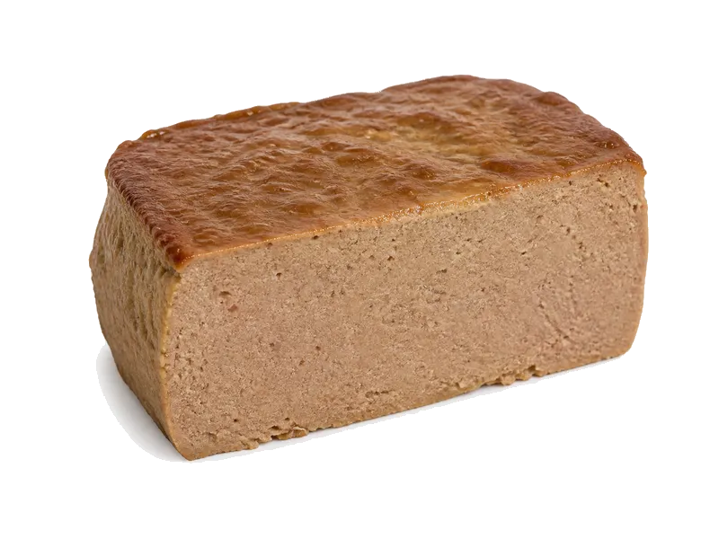

Mięsa i ryby
Pasztet podwawelski
Pasztet podwawelski: 11 g białka, 326 kcal, 5 g węglowodanów i 30 g tłuszczu na 100 g. Kategoria: Mięsa i ryby.
Kalorie326 kcalna 100 g
Białko / proteiny11 g
Węglowodany5 g
Tłuszcz30 g
Cena (szac.)~4,00 złza 100 g
Ceny zaktualizowano: maj 2026 (szacunek — ceny w popularnych supermarketach)
Porcja: kromka (30g)
| Kalorie | 98 kcal |
|---|---|
| Białko | 3.3 g |
| Węglowodany | 1.5 g |
| Tłuszcz | 9 g |
| Cena (szac.) | ~1,20 zł |
Szczegółowe składniki odżywcze na 100 g
| Wartość energetyczna (kalorie) | 326 kcal |
|---|---|
| Białko (proteiny) | 11 g |
| Węglowodany | 5 g |
| Tłuszcz | 30 g |
| Tłuszcze nasycone | 11 g |
| Tłuszcze nienasycone | 19 g |
| Witaminy i minerały | Sód, Żelazo, Cynk |
| Współczynnik kcal / 1 g białka | 29.6 |
| Cena produktu (szac. za 100 g) | ~4,00 zł |
| Cena za 100 g białka (szac.) | ~36,36 zł |